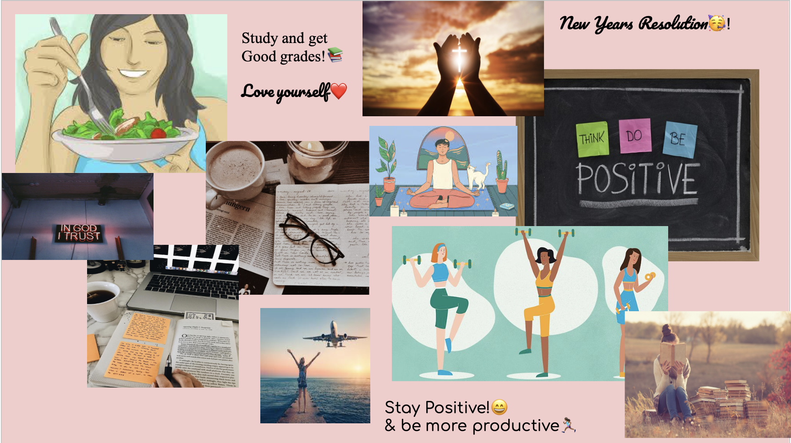

This is my art piece of mini franklin stein eating cake 🂠on his birthday 🈠with a live spoon🥄.


I photographed these pictures and added different contrast, pattern, and selective focus using editing apps.

I created a snowman using one sock, rice, and a sharpie to add its buttons and face. With addition cheese cut out to represent the carrot nose.
This was a vision board for my new years revolution. I wanted to find pictures that motivates me to be the best.😁

For this project I followed the steps to make my own Bitmoji Person that looks like me and has accessories that represent my life! I used SnapChat to recreate this. I like to bake so I made my bitmoji a chef and we can see how shes baking something. My favorite food is pizza 🍕, so I made my bitmoji be next to a heart pizza representing the love I have for it lol. People say I get mad easily so we can see my bitmoji huffing due to her being angry. Lastly I am fascinated with learning new things and becoming the bes version of my self. My bitmojis represent me;)